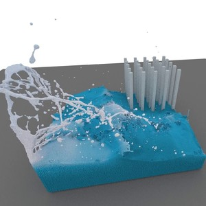
Numerical approximations of partial differential equations (PDEs) are routinely employed to formulate the solution of physics, engineering, and mathematical problems involving functions of several variables, such as the propagation of heat or sound, fluid flow, elasticity, electrostatics, electrodynamics, and more. While this has led to solving many complex phenomena, there are some limitations. Conventional approaches such as Finite Element Methods (FEMs) and Finite Difference Methods (FDMs) require considerable time and are computationally expensive. In contrast, data-driven machine learning-based methods, such as neural networks, provide a faster, fairly accurate alternative, and, in particular, focus on neural operators, which have certain advantages such as discretization invariance and resolution invariance. This article aims to provide a comprehensive insight into how data-driven approaches can complement conventional techniques to solve engineering and physics problems, while also noting some of the open problems of machine learning-based approaches. We will note how these new computational approaches can bring immense advantages in tackling many problems in fundamental and applied physics.
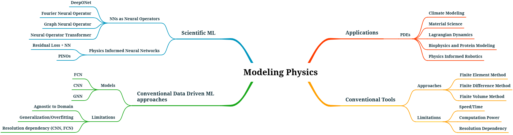
The survey covers data-driven and physics-informed neural operators within the broader realm of scientific ML. It evaluates these models along three axes (scalability, generalizability, and sensitivity to training data quality) and discusses the open problems in each. It then reviews benchmark datasets and controlled settings, and three classes of applied problems: large-scale forecasting and long-range temporal problems, modeling heterogeneous systems, and inverse problems.
Instead of learning the solution to one discretized instance of a PDE, operator learning learns the map between infinite-dimensional function spaces,
Its defining property is discretization invariance: a model trained at one resolution can be evaluated at any other. This enables rapid inference, orders of magnitude faster than classical solvers, and mesh independence, for example training on a \(40 \times 40\) grid and evaluating on \(256 \times 256\) without retraining ("zero-shot super-resolution").
The field originated with two paradigms. Branch–trunk architectures (DeepONet) encode the input function and the query coordinates with two sub-networks and take their dot product. Integral kernel architectures iterate the transformation
approximated by message passing on graphs (GNO) or as a multiplication in Fourier space after an FFT, truncated at \(k_{max}\) modes (FNO). Task-specific variants followed: geometry-aware operators for irregular domains (Geo-FNO, GINO); transformer and generative backbones (AFNO, IPOT, GNOT, Transolver; GANO, DSNO); physics-informed neural operators that add a PDE residual to regularize the operator (PINO); multiwavelet operators for localized high-frequency features (MWNO); and foundation-style pre-trained and modular frameworks (CoDANO, UPT).
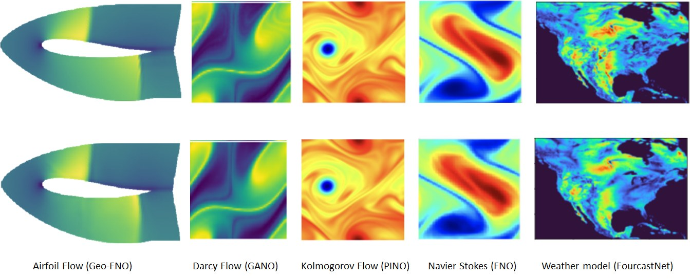
| Model | Advantages | Limitations |
|---|---|---|
| Fourier neural operator | Faster; resolution and discretization invariant; data driven; doesn't need to know the underlying PDE; zero-shot super-resolution | Aliasing errors; only works on rectangular domains with uniform meshes; overfits with deeper networks |
| DeepONet | Approximates mappings between infinite-dimensional Banach spaces; learns oscillatory continuous functions | Requires a high amount of training data; not resolution invariant (fixed input discretization) |
| Graph neural operator | Learns long-range dependencies in graph-like data; linear time complexity; discretization invariant | Outperformed by FNO on all PDEs with regular meshes |
| PINO | Overcomes the limitations of purely physics-based and purely data-driven approaches; combines coarse- and high-resolution data | Not rigorously tested on high-dimensional PDEs |
| Geo-FNO | Geometry aware; accepts irregular meshes and point clouds | Only tested on regular homeomorphic topologies |
| Multiwavelet NO | Compact representation; resolution-independent solutions | Cannot generalize to high-frequency signals from low-frequency ones |
Condensed from the survey's comparison table, which also covers GANO/UNO, Adaptive FNO, Implicit FNO and Spectral NO.
Neural operators are not yet a panacea. The survey organizes the challenges of moving from theoretical universality to practical deployment along three axes.
Eulerian benchmarks (Darcy flow, Poisson and heat equations, Burgers', Kolmogorov flow, Kármán vortex street) test mappings between fields; Lagrangian benchmarks test physical interactions on dynamic, unstructured graphs, bridging scientific ML and computer graphics.
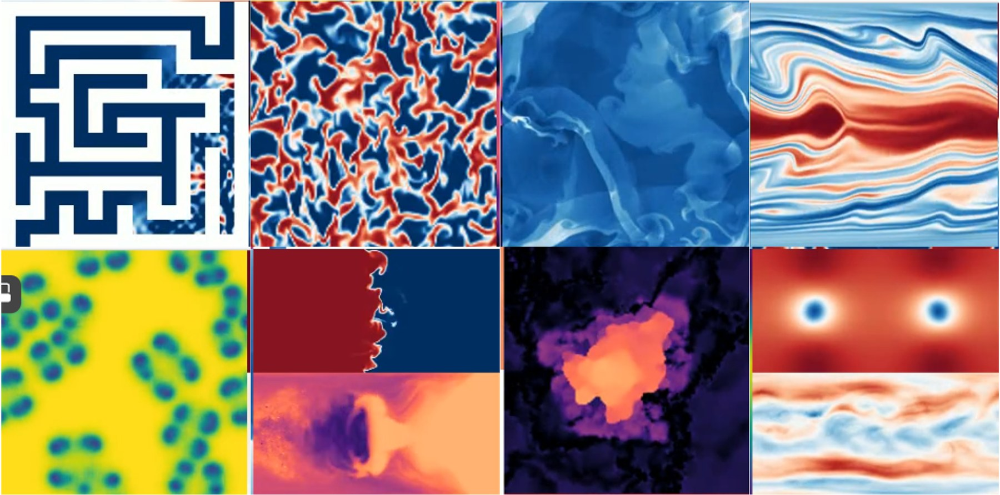
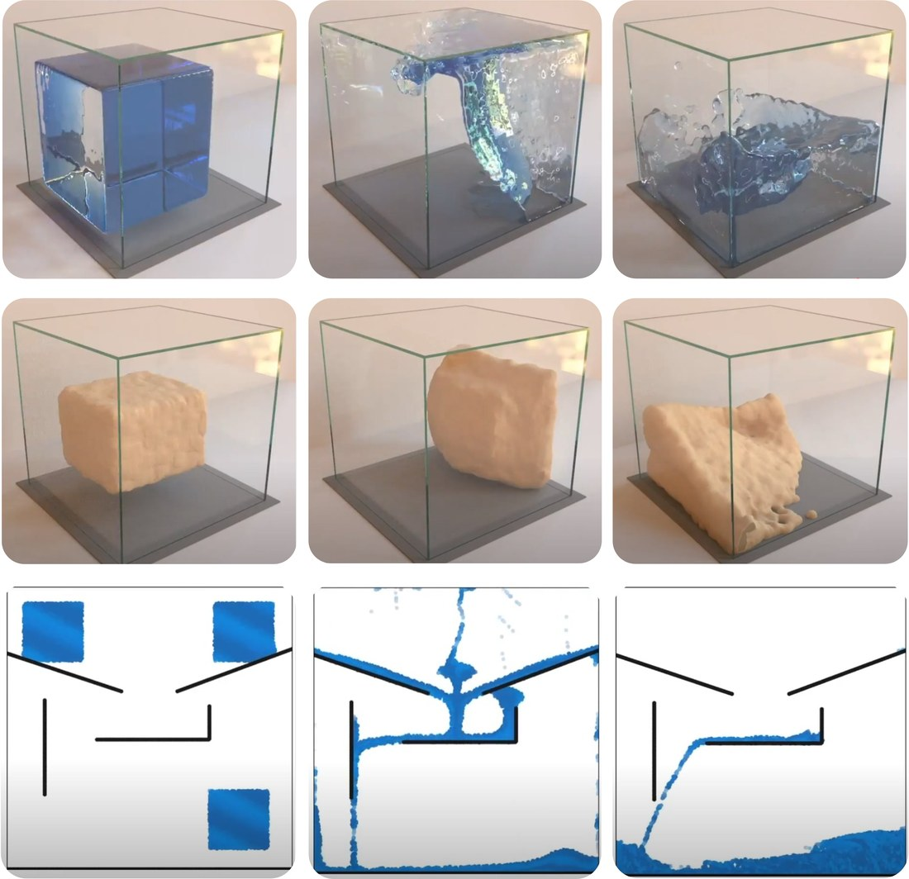
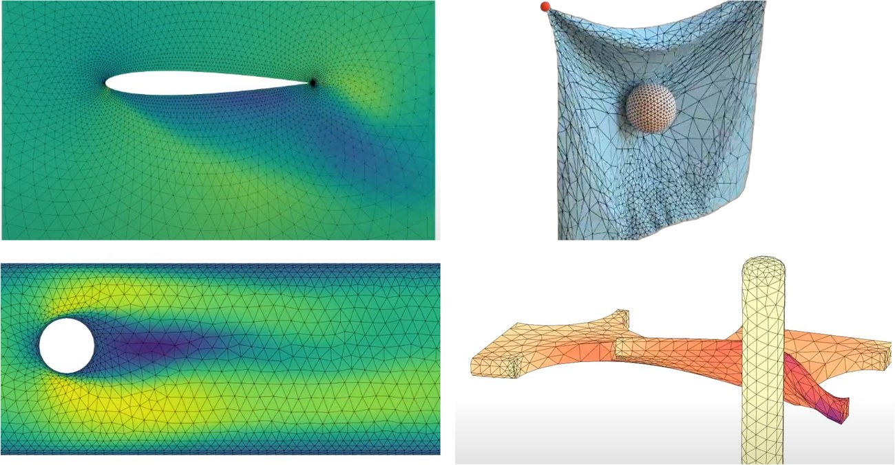
The central challenge is stability and mitigating error accumulation over long temporal rollouts, from planetary weather (FourCastNet) and urban microclimates to turbulence.
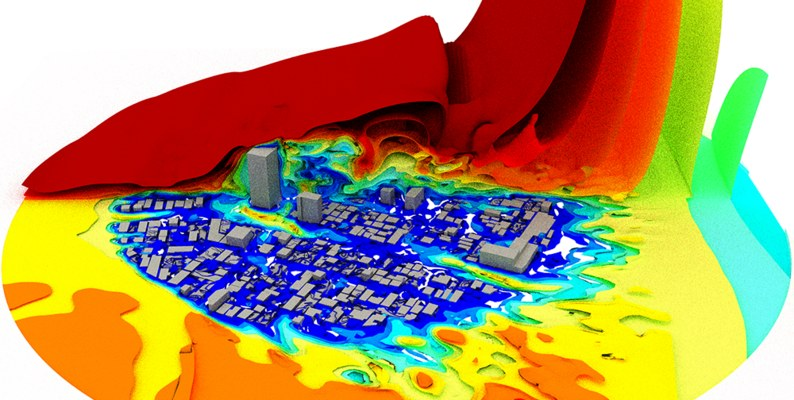
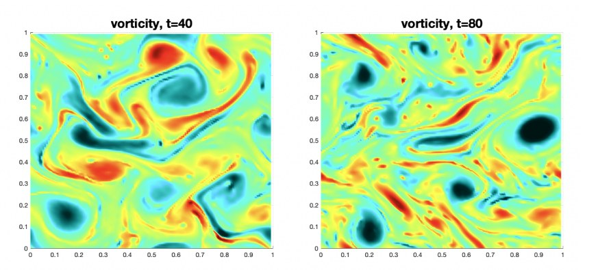
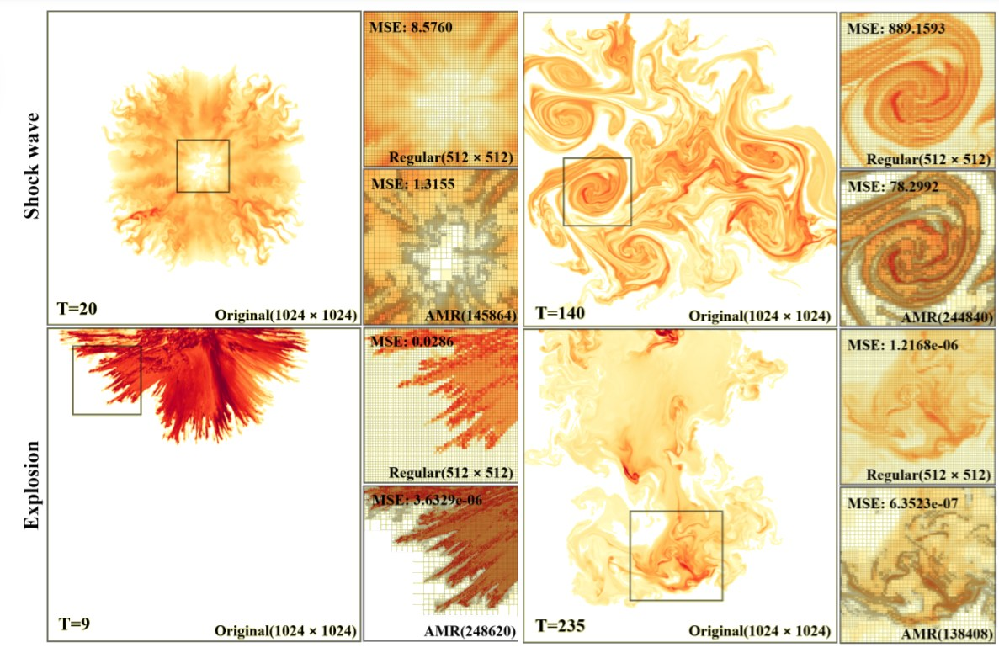
Here the difficulty is spatial heterogeneity: sharp discontinuities at multi-material interfaces and shocks, in porous media, inelastic impact and composite manufacturing.
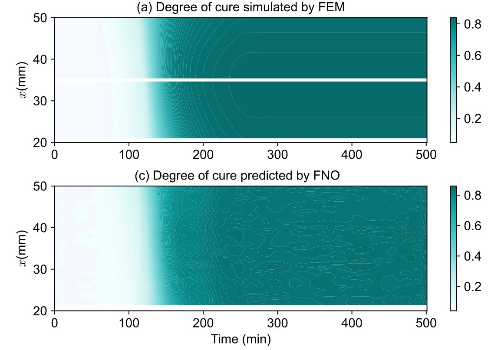
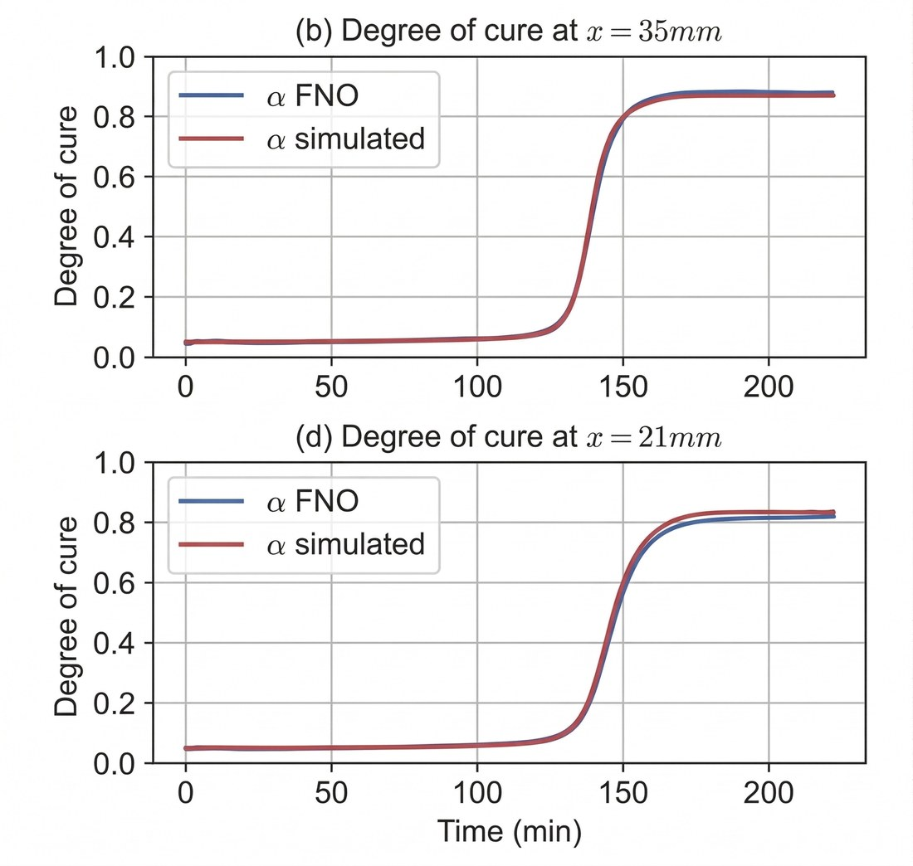
Thermochemical curing of composites with residual FNOs (Chen et al.).
Operators are differentiable, which makes them natural surrogates for inverse problems and design, from bio-molecular design to physics-informed planning and surface reconstruction.
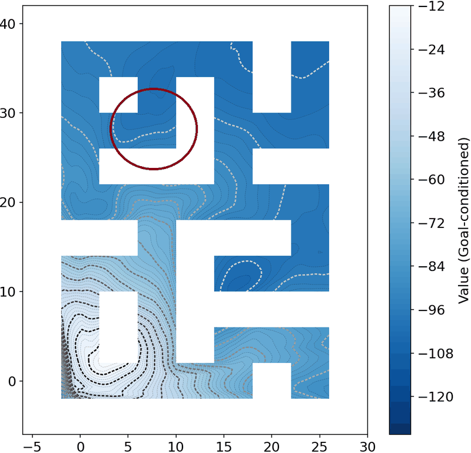
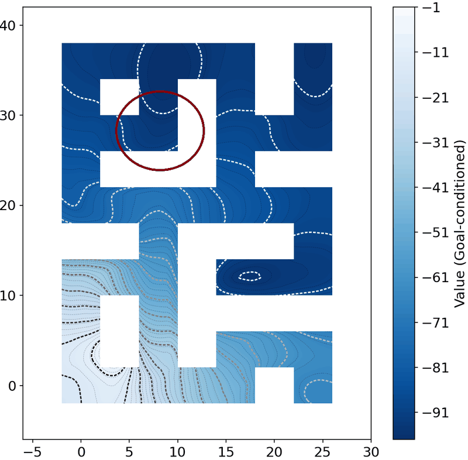
Value function over a maze-like environment: PINN constraints improve its contours. Reproduced from Viswanath et al.
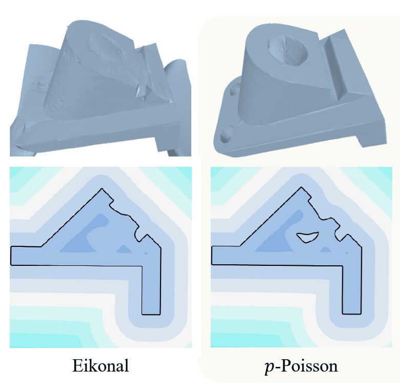
"It is increasingly apparent that the future lies in synergy."
Neural operators trade a one-time training cost for very fast evaluation. In the survey's worked example, Bayesian inversion of Navier–Stokes with function-space MCMC, a conventional solver takes 2.2 s per evaluation and an FNO 0.005 s, after roughly 12 hours of training. For 100,000 evaluations on a cloud GPU instance, that is under $40 for the FNO, training included, against about $187 for the conventional solver. For a small number of evaluations, the conventional solver remains more efficient.
Numerical solvers are still needed to produce the training data, and the quality of that data bounds the operator. The survey's answer to its central question is therefore not replacement but complementarity: data-driven surrogates working in tandem with traditional solvers. It points to active learning, meta-learning and in-context learning to reduce data requirements, and to integrating operators into FEM software packages to make them accessible to physics researchers.
@article{viswanath2026neural,
title = {Neural Operator: Is data all you need to model the world? An insight into the paradigm of data-driven scientific ML},
author = {Viswanath, Hrishikesh and Rahman, Md Ashiqur and Vyas, Abhijeet and Shor, Andrey and Medeiros, Beatriz and
Hernandez, Stephanie and Eswarappa Prameela, Suhas and Bera, Aniket},
journal = {IEEE Transactions on Pattern Analysis and Machine Intelligence},
year = {2026}
}